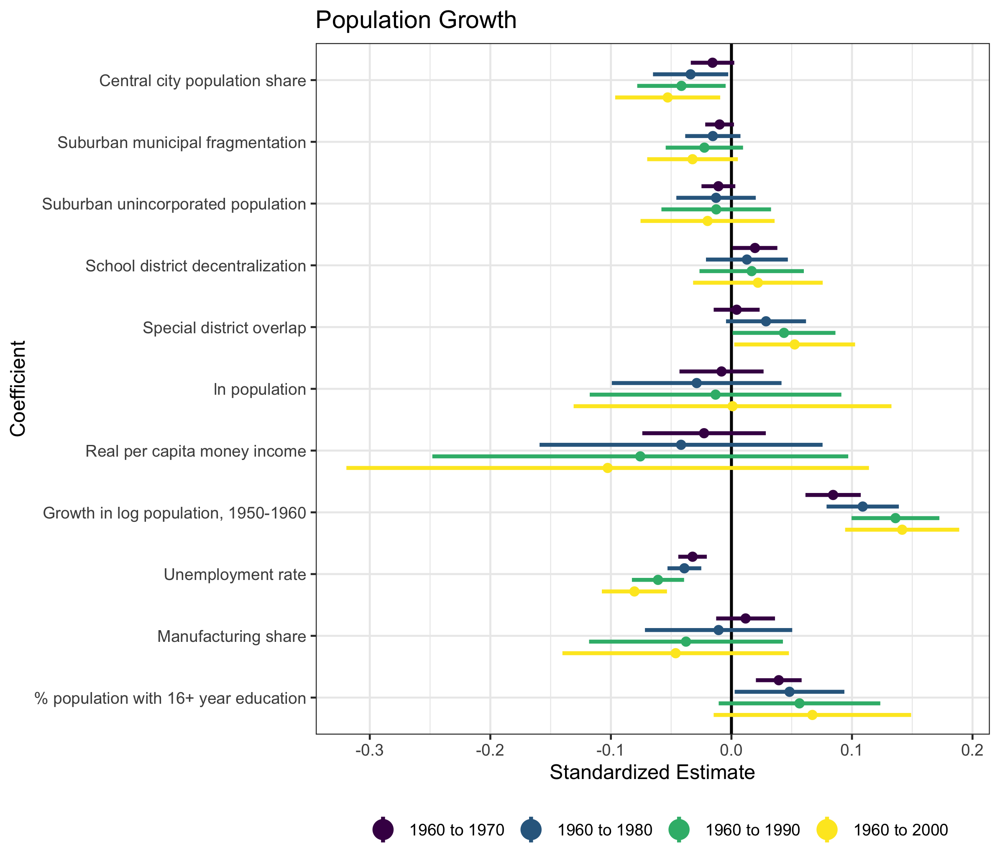
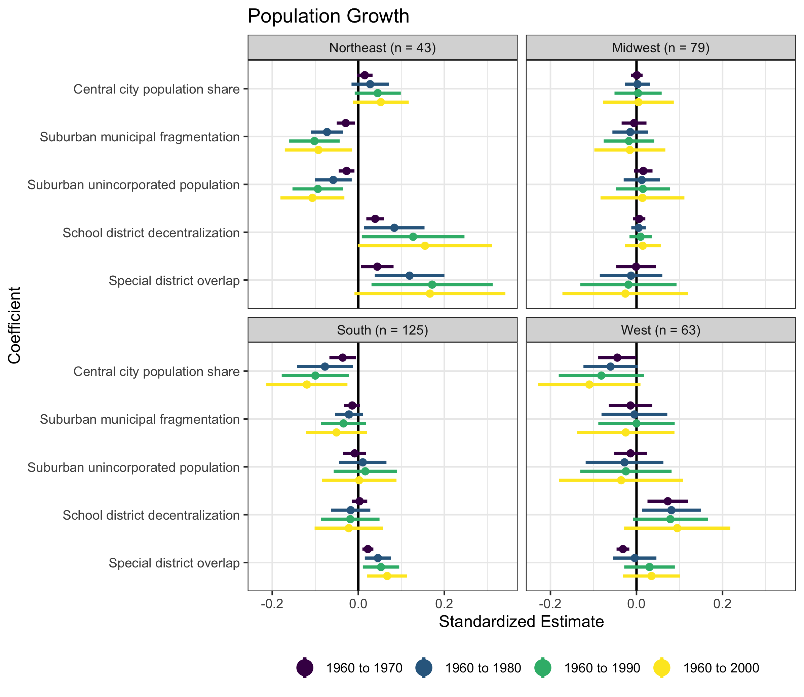

![]()
Metropolitan economic growth is a perennial topic of interest to policymakers and scholars. Why do some areas flourish while others decline? Previous analyses suggest the underlying strength and structure of the economy is important, as is nicer weather. Another important consideration is the structure of local governments in a metropolitan area. The structure and powers of local government as a source of metropolitan growth are a popular topic in more international contexts. However, they have received significantly less attention in the US. States grant considerably more powers to local governments, and local governments are typically more numerous in the US than other parts of the world, making this an interesting case to study.
The influence of local governments on growth
How might the structure of local governments influence economic growth? There are two competing schools of thought. The “polycentrists” explain that more local governments can be a means to economic growth. Many local governments in an area create a competitive environment, where each government competes to provide public services most efficiently at the lowest cost. For overlapping local governments, the geographic differences in local government size offer the opportunity to match efficient production of services more closely, i.e., take advantage of economies of scale, and allow component local governments to make decisions on the level of service provision appropriate in their area.
On the opposing side, the “government reformists” suggest that fewer local governments can be a means to economic growth. Efficiency forms the core of the argument; however, mechanisms are different. Rather than focusing on competition-induced efficiency, the government reformists focus on potential administrative efficiencies of having fewer local governments. Eliminating duplication of services, overcoming coordination issues, and directly realizing economics of geographic scale are all possible mechanisms to drive growth.
In general, academic research falls more often on the polycentrists side. More local governments can be associated with higher growth or not, and city-county consolidations, a recommended government reform, is generally not related to economic growth.
Measuring economic growth in US metropolitan areas
In new research I analyze economic growth (population, jobs, per capita money income) from 1960 to 2000 in 314 metropolitan areas in the US. I borrow the methodology of Ed Glaeser of Harvard University and colleagues, where long-run economic growth is a function of the initial conditions of the metropolitan area (population, wealth, population growth, unemployment rate, manufacturing share, and percent of the population with a college degree). Those metropolitan areas with “better” initial conditions should grow more quickly in the following period.
My model includes information on five variables covering local government characteristics. The first three variables are: the share of the total metropolitan population residing in central cities, the average population of suburban (non-central) cities and the share of the metropolitan population that resides in unincorporated areas. These variables measure the influence of general-purpose local governments with higher values associated with lower political fragmentation. The last two measures, the number of school districts divided by the number of non-overlapping cities/townships, and the number of special districts divided by the number of non-overlapping cities/townships, relate to the influence of special-purpose local governments. Higher levels are associated with greater political fragmentation.
Figure 1 shows the influence for my model’s variables with population growth as the dependent variable (results for jobs growth and income growth look similar). Of the general government structure variables, only the share of the central city population has any significant impact. Those metro areas with larger central cities relative to their suburbs declined in population on average, and the size of this effect grows as the period of growth increases. Special district overlap is a positive predictor of metropolitan growth in the longest time range as well.

Compared to the other variables, local government structure is a poor predictor of metropolitan growth. Initial economic conditions such as prior growth or the unemployment rate are far better at predicting long-run growth.
Looking more closely at regional differences
But what if the overall results are masking variations between regions? Metropolitan areas in different parts of the US grow differently, and local government structures may affect these metropolitan areas in different ways. Figure 2 examines this possibility by breaking down the sample by Census region.

Figure 2 shows that some local government structure factors affect economic growth differently depending on the region the metropolitan area is in. Local government structure has little effect on growth in metropolitan areas in the Midwest; however, the structure of the suburbs and special-purpose governments is important for the northeast. Results are far more mixed for the southern and western regions.
This research stands at odds with much of the international literature on decentralization and economic growth that suggests increased decentralization can be a means to enhanced growth. The US is a highly decentralized country from a governance perspective. The benefits of devolution are likely already baked into the system, whereas decentralization in highly centralized countries is new and more likely to shock the system.
What does all this mean?
Policymakers in the US sometimes claim that the structure of local governments is helping or hindering economic growth in their areas. Some areas are highly fragmented, and it is easy to claim this is a significant impediment (or enhancement) to growth. My results suggest a more tepid response. The structure of local governments can be important, but it is often region-specific and easily overshadowed by the underlying economic characteristics of metropolitan areas.
If a policymaker wants to develop a strategy to enhance economic growth, there are better options than to propose a radical alteration to the existing local government structure. There is more bang for the buck in improving local educational opportunities or working to reduce unemployment.
This article is based on the paper, “Political Fragmentation & Economic Growth in US Metropolitan Areas” in the Journal of Urban Affairs.